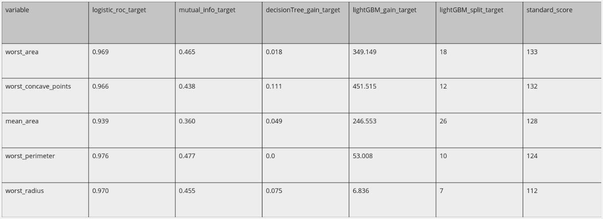
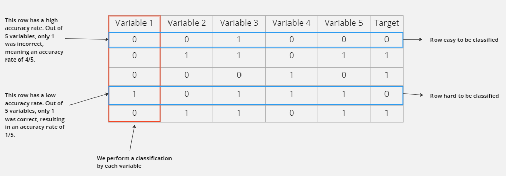
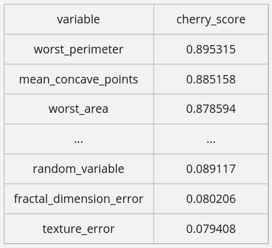

cherrypick¶
Some tools to help the process of feature selection
Free software: MIT license
Documentation: https://cherrypick.readthedocs.io. (work in progress!)
Features¶
CherryPick: utilizes the competitive scoring technique, offering a comprehensive pipeline that incorporates multiple techniques to measure feature importance. It provides a ranked list of the most important variables, sorted based on their calculated scores.
cherry_score: unique score developed exclusively for this library. It assesses the importance of a variable by evaluating its ability to classify a row based on the performance of other variables.
How it Works?¶
In this section we give a more descriptible detail about the function of each tool developed in this library.
Competitive Score¶
This technique involves evaluating and ranking the performance of each explanatory variable in relation to the dependent variable. After all the evaluation processes, the results are combined to provide an overall understanding from multiple independent evaluation processes. The term “competitive” arises from the fact that the process resembles a competition among the explanatory variables, with the one that generally outperformed the others throughout each evaluation being the winner.
The model allows for the use of a standard pipeline with various metrics and classifiers that can immediately be applied to the scoring process. Alternatively, one can create a custom pipeline by simply fitting the dataframe, where one column represents the explanatory variables and the remaining columns correspond to each evaluation process.
Using the breast cancer Wisconsin dataset as an example, we can obtain the following example dataframe:
{kind=link}
In the table above, we present the entire process of constructing the competitive scoring. The first column displays the explanatory variables, positioned according to their final score shown in the last column. The intermediate columns represent the evaluation stages and the performance value of each variable in that stage. The closer the explanatory variable’s row is to the top, the higher the degree of explainability it has with the target variable.
Therefore, in our example, the variable “worst_area” has the highest degree of explainability in relation to the target variable among all the variables analyzed. On the other hand, within this sample, “worst_radius” would be the worst.
cherry_score¶
A score developed exclusively for this library, it is based on the accuracy rate of each explanatory variable’s rows. It helps us understand how well each row in our dataset is classified by different variables, giving us an idea of the classification difficulty. We split the rows into two groups: easy and difficult to classify. By looking at the scores and accuracy rates within each group, we can assess how well the explanatory variables perform for each group. This helps us identify any inconsistencies in a variable's behavior. We assume that highly correlated variables will consistently classify the target variable correctly, regardless of other variables' difficulties. Therefore, important variables should have high accuracy rates for both easy and difficult rows.
{kind=link}
However, when dealing with random variables, relying solely on the accuracy rate is not sufficient. The ability to correctly or incorrectly classify a row depends entirely on the class distribution within the target variable. For example, if the target variable has an equal distribution of easy and difficult rows (50/50), random variables tend to have an equal chance of correctly classifying both types of rows. This observation highlights an additional aspect: the inconsistency in the nature of random variables. If a variable shows a higher accuracy rate for difficult rows compared to easy rows, it indicates that the variable struggles to adapt to simpler points that are easily classified but performs better with more challenging points. This behavior suggests that the variable likely has a random relationship with the target variable since the probability of correctly classifying an easy or hard row tends to be the same, indicating zero correlation.
To better understand how this technique works, let’s consider a real-world example it was inspired by. In Brazil, there is a national exam called the Exame Nacional do Ensino Médio (ENEM), which determines whether students can enter higher education institutions. Given the national scale of the exam, many precautions were taken in its construction, including how to assign scores to participants. For instance, if the exam were to determine scores based solely on the accuracy rate (i.e., the number of correctly answered questions), a problem could arise. This is because the exam consists mostly of multiple-choice questions, except for the essay section, which allows for some individuals to obtain a reasonable score by simply guessing the answers. As a result, many university spots could be allocated to individuals who were lucky enough to guess a higher number of questions correctly, instead of those who prepared for the exam, thus denying the latter the opportunity to secure a university place. To reduce these chances, a mechanism was created to penalize guessing. Therefore, in addition to selecting the best-performing students, the mechanism also penalizes those who answer randomly.
Although the exact mechanism is not described, I attempt to create an approximation that qualitatively replicates the scoring concept. We can consider the questions in the exam as the variables we intend to study, and the rows in the columns as the questions that participants should answer. In our case, as we are working with binary classification variables, it would be equivalent to an exam with a number of true or false questions per target variable’s row.
This approach yields interesting results. We can use the Wisconsin breast cancer dataset, which was previously used for competitive scoring, to test the cherry_score, and the results are quite decent.
{kind=link}
The image above is a snapshot where we selected the top 3 and bottom 3 out of 30 total variables from the Wisconsin breast cancer dataset based on the cherry_score criterion. Alongside the original variables in the dataset, we added a random variable. We can observe that within the universe of 30 variables, the cherry_score successfully distinguished the random variable from the other variables in the set.
Credits¶
Developed by Lucas Caramês.
With contributions by Vinicius Ormenesse.
This package was created with Cookiecutter and the audreyr/cookiecutter-pypackage project template.